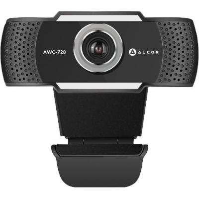
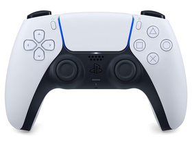

Webkamera
A webkamera internetkapcsolattal rendelkező számítógépekhez kapcsolt kis videókamera, melynek képét akár más internetezők is nézhetik. A webkamerákat el lehet helyezni nyilvános helyen (pl. egy város főterén) és a saját dolgozószobánkban is. Képminősége jóval gyengébb, mint a kézi videókameráké.


HDD
A merevlemez (angolul hard disk drive, rövidítése HDD) egy számítástechnikai adattároló berendezés. Az adatokat kettes számrendszerben, mágnesezhető réteggel bevont, forgó lemezeken tárolja. Maga az elnevezés retronima, ugyanis ezt az adattároló berendezést csak a floppy disk (hajlékonylemez) megjelenése óta nevezik így.